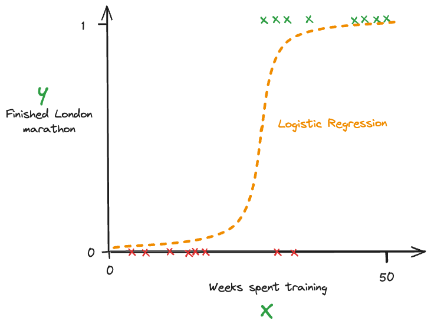
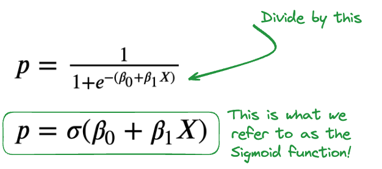
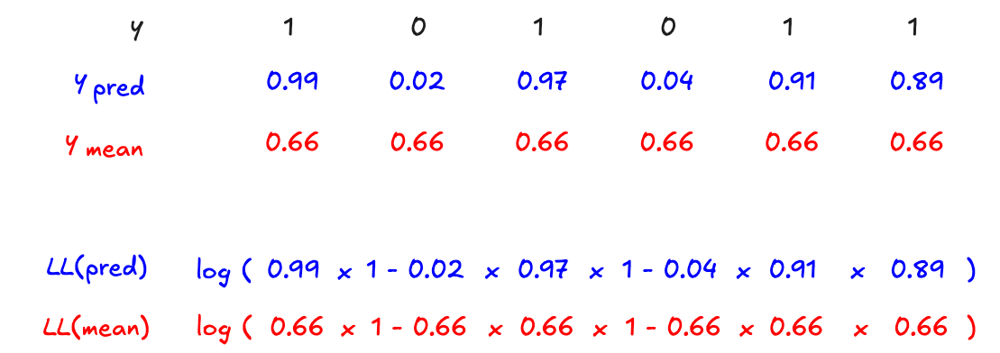

Logistic Regression
Comprendre la régression logistique pour prédire des outcomes binaires — modéliser une probabilité via la fonction sigmoïde, interpréter les coefficients en log-odds et odds, évaluer la performance avec le pseudo R², et détecter la multicolinéarité avec le VIF.
- Cheatsheet — Logistic Regression
- ️ Récapitulatif — Erreurs clés à éviter
- 1) Rappels mathématiques — Logarithmes et probabilités
- 2) La régression logistique — Fondements
- 3) Interpréter les coefficients — Dataset Titanic
- 4) Évaluer la performance
- 5) Multicolinéarité dans les modèles linéaires/logistiques
- 6) Récapitulatif — Comparaison OLS vs Logit
- Bibliographie
- Challenges
📋 Cheatsheet — Logistic Regression
Fonctions mathématiques clés
import numpy as np
## Fonction logistique (sigmoid) : transforme un score en probabilité ∈ [0, 1]
def sigmoid(x): return 1 / (1 + np.exp(-x))
## Logit (inverse du sigmoid) : transforme une probabilité en log-odds ∈ [-∞, +∞]
def logit(p): return np.log(p / (1 - p))
## Conversion probabilité → odds → log-odds
p = 0.9
odds = p / (1 - p) # odds = 9 (pour 90%)
log_odds = np.log(odds) # log-odds = 2.197
## Conversion log-odds → probabilité
log_odd = -0.47
odds = np.exp(log_odd) # odds = 0.62
p = odds / (1 + odds) # p = 0.38 → 38% de chancesModèle logistique avec statsmodels
import statsmodels.formula.api as smf
import seaborn as sns
titanic = sns.load_dataset("titanic") # charge le dataset Titanic
## Sans feature : juste l'intercept (= log-odds de la moyenne)
model1 = smf.logit(formula='survived ~ 1', data=titanic).fit()
## Avec une feature continue
model2 = smf.logit(formula='survived ~ fare', data=titanic).fit()
## Avec une feature catégorielle (C() encode en dummies automatiquement)
model3 = smf.logit(formula='survived ~ C(pclass)', data=titanic).fit()
## Avec plusieurs features mixtes
model4 = smf.logit(formula='survived ~ fare + C(sex) + age', data=titanic).fit()
model4.params # coefficients β (en log-odds)
model4.summary() # tableau complet : coefs, std err, z, p-value, IC 95%Interpréter les coefficients
## Coefficient β → log-odds
## exp(β) → odds ratio (multiplicateur d'odds)
coef = model2.params['fare'] # β = 0.015 (log-odds)
odds_ratio = np.exp(coef) # exp(0.015) = 1.015 → +1.5% d'odds par dollar supplémentaire
## Intercept seul (sans feature)
beta0 = model1.params['Intercept'] # = log-odds global (ex: -0.47)
odds = np.exp(beta0) # = 0.62
p = odds / (1 + odds) # = 38% → taux de survie moyenÉvaluation du modèle
model4.llf # log-likelihood : ∈ (-∞, 0], plus proche de 0 = meilleur
model4.llnull # log-likelihood du modèle nul (prédit juste la moyenne)
model4.prsquared # pseudo R² de McFadden : 1 - LL(model) / LL(null) ∈ [0, 1]Détecter la multicolinéarité — VIF
from statsmodels.stats.outliers_influence import variance_inflation_factor as vif
## Toujours scaler les données avant de calculer le VIF
mpg_scaled = (mpg - mpg.mean()) / mpg.std() # standardisation z-score
## Calculer le VIF pour chaque feature
df_vif = pd.DataFrame()
df_vif["features"] = mpg_scaled.columns
df_vif["vif_index"] = [vif(mpg_scaled.values, i) for i in range(mpg_scaled.shape[1])]
## Règle de décision : VIF ≥ 10 → multicolinéarité préoccupante
## Vérifier aussi le rang de la matrice
np.linalg.matrix_rank(X) # doit = nombre de features⚠️ Récapitulatif — Erreurs clés à éviter
Interpréter les coefficients comme des probabilités directes
❌ β = 0.015 → "fare augmente la probabilité de survie de 1.5%"
✅ β = 0.015 → "fare augmente les log-odds de 0.015" — exp(0.015) = 1.015 → odds multipliés par 1.015
Confondre log-odds, odds et probabilité
❌ Intercept = -0.47 → "38% de chance de survie" (raccourci incorrect)
✅ log-odds = -0.47 → odds = exp(-0.47) = 0.62 → p = 0.62 / 1.62 = 38% (conversion en 2 étapes)
Utiliser R² classique pour évaluer une régression logistique
❌ Regarder le R² comme en régression linéaire
✅ Utiliser le pseudo R² : model.prsquared — valeur ∈ [0, 1], utile pour comparer des modèles sur les mêmes données
Ne pas détecter la multicolinéarité avec la matrice de corrélation seule
❌ Regarder uniquement les paires de corrélation pour détecter la multicolinéarité
✅ La corrélation ne détecte que la colinéarité bivariée — utiliser le VIF pour la multicolinéarité multiple
Oublier de scaler les features avant de calculer le VIF
❌ vif(mpg.values, i) sur données brutes → résultats biaisés
✅ Toujours standardiser : mpg_scaled = (mpg - mpg.mean()) / mpg.std() avant le calcul du VIF
1) Rappels mathématiques — Logarithmes et probabilités
1.1 Logarithmes essentiels
1.2 Probabilité, Odds et Log-Odds
| Concept | Formule | Exemple (p = 0.9) |
|---|---|---|
| Probabilité | p ∈ [0, 1] | 0.9 |
| Odds | p / (1 − p) | 0.9 / 0.1 = 9 |
| Log-Odds (logit) | log(p / (1 − p)) | log(9) ≈ 2.197 |
La fonction Logit fait le lien entre probabilité et log-odds :
1.3 Problème à résoudre
Prédire un outcome binaire (0 ou 1) :
- Win / Loss, Succès / Échec,
dim_is_one_starou non
Plutôt que de fitter une droite linreg(x) = β₀ + β₁X (valeurs non bornées), on cherche à fitter la meilleure fonction sigmoïde :

Ensuite on fixe un seuil de classification (par défaut 50%) :
- 🔴 ŷ > 0.5 → classé 1
- 🔵 ŷ < 0.5 → classé 0
2) La régression logistique — Fondements
2.1 Du problème aux log-odds
Exemple : Barcelone Women's Football Team. On a les probabilités de victoire pour chaque match, les odds correspondants, puis les log-odds.
La régression logistique modélise directement les log-odds comme une fonction linéaire de X :
Ce qui donne en probability space (en appliquant le sigmoid) :

2.2 Comment trouver les meilleurs β ? — Maximum de Vraisemblance
On ne peut pas minimiser les SSR comme en OLS (pas de résidus gaussiens). On cherche plutôt les β qui maximisent la vraisemblance (likelihood) d'observer les données.
La vraisemblance = probabilité combinée d'observer tous les résultats yᵢ :
Exemple pour y = [1, 0, 1, 0, 1, 1] et ŷ = [0.99, 0.02, 0.97, 0.04, 0.91, 0.89] :
- L(β) ∈ [0, 1] — plus proche de 1 = meilleur modèle
En pratique, on maximise le log-likelihood (même optimum, mais convexe et numériquement stable) :
👉 Explication visuelle likelihood logistique
2.3 Calibration
Les classifieurs logistiques sont des classifieurs calibrés : pour 100 observations prédites à ŷ ≈ 0.95, ~95 auront effectivement y = 1. La probabilité prédite a un sens réel.
3) Interpréter les coefficients — Dataset Titanic
3.1 Sans feature — intercept seul
titanic = sns.load_dataset("titanic")
## Modèle intercept uniquement : log-odds = β₀
model1 = smf.logit(formula='survived ~ 1', data=titanic).fit()
model1.params## Output
Intercept -0.473288
dtype: float64Conversion log-odds → probabilité :
→ Taux de survie moyen = 38% ✓
3.2 Avec une feature continue (fare)
model2 = smf.logit(formula='survived ~ fare', data=titanic).fit()
model2.params## Output
Intercept -0.941330
fare 0.015197
dtype: float64Interprétation β_fare = 0.015 :
3.3 Avec une feature catégorielle (pclass)
model3 = smf.logit(formula='survived ~ C(pclass)', data=titanic).fit()
model3.params## Output
Intercept 0.530628 # log-odds de survie en 1ère classe (référence)
C(pclass)[T.2] -0.639431 # différence de log-odds 2ème vs 1ère classe
C(pclass)[T.3] -1.670399 # différence de log-odds 3ème vs 1ère classe
dtype: float64Interprétation C(pclass)[T.2] = -0.63 :
→ Les odds de survie en 2ème classe sont divisés par 1.87 par rapport à la 1ère classe.
3.4 Avec plusieurs features
model4 = smf.logit(formula='survived ~ fare + C(sex) + age', data=titanic).fit()
model4.params## Output
Intercept 0.934841
C(sex)[T.male] -2.347599 # être homme réduit les log-odds de 2.35 vs femme
fare 0.012773 # chaque dollar de fare augmente les log-odds de 0.013
age -0.010570 # chaque année d'âge réduit les log-odds de 0.011
dtype: float64→ exp(-2.35) = 0.095 : les odds de survie d'un homme sont ~10 fois inférieures à celles d'une femme, toutes choses égales.
4) Évaluer la performance
4.1 Inférence statistique
model4.summary() # tableau complet incluant z-score et p-values| Métrique | OLS (linéaire) | Logit |
|---|---|---|
| Test | t-score | z-score |
| Pourquoi ? | Variance estimée | Variance connue : σ² = p(1−p) |
| p-value | idem | idem |
| IC 95% | idem | idem |
Conditions d'inférence pour la logistique — moins strictes qu'OLS :
| Condition | Requise ? |
|---|---|
| Échantillonnage aléatoire | ✅ Oui |
| Échantillonnage indépendant | ✅ Oui |
| Résidus normaux et homoscédastiques | ❌ Non requis |
4.2 Goodness-of-fit — Pseudo R²
Le log-likelihood joue le même rôle que la SSR en régression linéaire :
Le Pseudo R² de McFadden est l'analogue du R² :

model4.prsquared # → 0.2576 : le modèle explique 25.8% de la log-vraisemblance
model4.llf # log-likelihood du modèle : -358.04
model4.llnull # log-likelihood nul : -482.26Le Pseudo R² est utile pour comparer des modèles sur les mêmes données, mais moins interprétable que le R² linéaire. Deux prédictions proches (0.49 vs 0.51) donnent des classifications opposées !
Les métriques de classification avancées (accuracy, precision, recall, f1_score, AUC-ROC...) seront vues pendant le module Machine Learning.
5) Multicolinéarité dans les modèles linéaires/logistiques
5.1 Multicolinéarité stricte
Si une feature Xₖ est une combinaison linéaire exacte d'autres features (ex: X₃ = X₁ + X₂), la matrice X n'est pas de rang plein → impossible d'inverser X'X → pas de solution unique.
A = np.array([[1., 0., 1.], [0., 1., 1.], [0., 0., 0.]])
B = np.array([[1., 0., 0.], [0., 1., 0.], [0., 0., 1.]])
np.linalg.matrix_rank(A) # → 2 (C3 = C1 + C2 → non plein rang !)
np.linalg.matrix_rank(B) # → 3 (plein rang ✓)Conséquence pratique : les coefficients explosent à la moindre variation des données :
## Feature artificielle : combinaison linéaire exacte de cylinders et horsepower
mpg['lin_comb'] = 10 * mpg['cylinders'] - 0.3 * mpg['horsepower']
model = smf.ols(formula='weight ~ cylinders + horsepower + lin_comb', data=mpg).fit()
## → coefficients normaux en apparence : [3.4, 16.8, 28.7]
## Modifier un seul point de 1% sur horsepower...
mpg.loc[0, 'horsepower'] = mpg.loc[0, 'horsepower'] * 1.01
model = smf.ols(formula='weight ~ cylinders + horsepower + lin_comb', data=mpg).fit()
## → coefficients explosent : [11398, -325, -1110] !!statsmodels signale la multicolinéarité avec Cond. No. = 5.84e+04 dans le summary → toujours vérifier ce nombre.
5.2 Multicolinéarité forte (non stricte)
Même si le rang est plein, une forte corrélation entre features rend les coefficients instables :
## Ajouter un peu de bruit pour casser la colinéarité stricte
mpg['lin_comb'] = mpg['lin_comb'] + 0.05 * np.random.rand(mpg.shape[0])
np.linalg.matrix_rank(mpg) # → 7 (plein rang)
## Mais les coefficients restent très sensibles aux données !5.3 Détecter la multicolinéarité — VIF
La matrice de corrélation ne suffit pas : elle ne détecte que la colinéarité bivariée entre 2 features.
Le VIF (Variance Inflation Factor) mesure à quel point chaque feature est expliquée par les autres :
où R²ₖ = R² de la régression de Xₖ sur toutes les autres features.
from statsmodels.stats.outliers_influence import variance_inflation_factor as vif
## ⚠️ Toujours scaler avant de calculer le VIF
mpg_scaled = (mpg - mpg.mean()) / mpg.std() # standardisation z-score
## Calculer le VIF pour chaque feature
df_vif = pd.DataFrame()
df_vif["features"] = mpg_scaled.columns
df_vif["vif_index"] = [vif(mpg_scaled.values, i) for i in range(mpg_scaled.shape[1])]
df_vif.sort_values("vif_index", ascending=False)## Output (exemple avec lin_comb = combinaison de cylinders + horsepower)
## features vif_index
## 1 cylinders 2091.85 ← très élevé → multicolinéarité !
## 2 horsepower 943.73 ← très élevé
## 6 lin_comb 668.13 ← très élevé
## 3 weight 11.25 ← préoccupant
## 0 mpg 5.24 ← acceptable
## 4 acceleration 2.61 ← OK
## 5 model_year 1.90 ← OKRègle de décision : VIF ≥ 10 → multicolinéarité préoccupante, envisager de supprimer ou transformer la feature.
Impact de la multicolinéarité :
| Métrique | Impact |
|---|---|
| Coefficients partiels des features colinéaires | ⚠️ Instables et non fiables |
| p-values des features colinéaires | ⚠️ Non fiables |
| R² global | ✅ Pas d'impact |
| Coefficients des features non colinéaires | ✅ Pas d'impact |
6) Récapitulatif — Comparaison OLS vs Logit
| Vérification | Description | OLS | Logit |
|---|---|---|---|
| Goodness-of-fit | Qualité des prédictions | R² | Pseudo R² |
| Significativité statistique | Coefficients fiables ? | p-values + t-tests | p-values + z-tests |
| Conditions d'inférence | Peut-on faire confiance aux p-values ? | Graphiques des résidus | ❌ Non requis |
| Multicolinéarité | Indépendance des features | VIF | VIF |
👉 Summary logistique annoté complet
📚 Bibliographie
- 👉 StatsQuest — Logistic Regression (vidéos YouTube, très intuitif)
- 👉 Why not MSE as loss for logistic regression?
- 👉 Lecture notebook
🚀 Challenges
- Challenge 01 : Appliquer la régression logistique sur les données Olist
- Challenge 02 : Répondre à la demande du CEO en 1.5 jours — analyser les notebooks, logiques et modèles construits jusqu'ici
- 🧭 Introduction
- 1. Probabilité, odds et log-odds
- 2. La fonction sigmoïde — le coeur du modèle
- 3. Comment le modèle apprend — la vraisemblance
- 4. Interpréter les coefficients — Dataset Titanic
- 5. Évaluer la performance du modèle
- 6. Multicolinéarité — quand les variables se marchent dessus
- 7. Récapitulatif — OLS vs Logit
- 🎯 Questions de vérification
- 📌 TL;DR
🧭 Introduction
Contexte : classer, pas prédire un nombre
Jusqu'ici, la régression linéaire te permettait de prédire un nombre : un prix, une température, une durée. Mais parfois la question n'est pas "combien ?" — c'est "oui ou non ?" :
- Ce mail est-il un spam ou non ?
- Ce patient est-il malade ou sain ?
- Ce passager du Titanic a-t-il survécu ou non ?
C'est ce qu'on appelle la classification binaire : la sortie prend exactement deux valeurs, 0 ou 1. La régression logistique est l'un des algorithmes de base pour résoudre ce type de problème.
L'analogie fil rouge — l'interrupteur flou
Imagine un interrupteur : soit éteint (0), soit allumé (1). Mais en vrai, on ne te donne pas directement l'état final — on te donne une probabilité entre 0 et 1 : "il y a 80 % de chances que ce mail soit un spam". Tu décides ensuite de basculer l'interrupteur selon ce score.
La régression logistique, c'est exactement ça : elle calcule une probabilité, et tu l'utilises pour décider.
A retenir
- La régression logistique prédit une probabilité entre 0 et 1, pas une valeur brute.
- Elle s'appuie sur la fonction sigmoïde pour "comprimer" n'importe quel score réel dans $[0, 1]$.
- Les coefficients du modèle s'interprètent en log-odds, pas directement en probabilité.
- La performance se mesure avec le pseudo $R^2$ (et non le $R^2$ classique).
- La multicolinéarité entre variables peut rendre les coefficients inutilisables — on la détecte avec le VIF.
Mini-plan du cours
- Probabilité, odds, log-odds — les trois concepts fondamentaux
- La fonction sigmoïde — le coeur du modèle
- Comment le modèle apprend — la vraisemblance
- Interpréter les coefficients sur le Titanic
- Évaluer la performance — le pseudo $R^2$
- Détecter la multicolinéarité — le VIF
1. Probabilité, odds et log-odds
Trois façons de dire la même chose
Supposons qu'un mail a 90 % de chances d'être un spam.
| Concept | Formule | Résultat pour $p = 0{,}9$ |
|---|---|---|
| Probabilité | $p \in [0, 1]$ | $0{,}9$ |
| Odds (cote) | $\dfrac{p}{1 - p}$ | $\dfrac{0{,}9}{0{,}1} = 9$ |
| Log-odds (logit) | $\log\!\left(\dfrac{p}{1-p}\right)$ | $\log(9) \approx 2{,}197$ |
Les odds expriment un rapport : "pour 9 mails spam, il y en a 1 non-spam". C'est le même principe que les cotes sportives.
Les log-odds (ou logit) prennent le logarithme de ces cotes. L'avantage : ils vont de $-\infty$ à $+\infty$, ce qui permet de les modéliser avec une droite linéaire.
La fonction logit est la transformation officielle probabilité → log-odds :
Exemple numérique complet
import numpy as np
p = 0.9 # probabilité : 90 %
odds = p / (1 - p) # odds = 9.0
log_odds = np.log(odds) # log-odds ≈ 2.197
print(odds) # 9.0
print(log_odds) # 2.197Et dans l'autre sens (log-odds → probabilité) :
log_odd = -0.47 # on part d'un log-odds négatif
odds = np.exp(log_odd) # odds = 0.624
p = odds / (1 + odds) # p ≈ 0.38 → 38 % de chances
print(p) # 0.384Retenir la chaîne de conversion : probabilité ↔ odds ↔ log-odds. On passe toujours par ces deux étapes pour interpréter les résultats du modèle.
2. La fonction sigmoïde — le coeur du modèle
Pourquoi pas une droite ordinaire ?
En régression linéaire, on modélise $\hat{y} = \beta_0 + \beta_1 X$. Si on applique ça directement à un problème de classification, rien n'empêche $\hat{y}$ de valoir $-5$ ou $200$ — ce n'est pas une probabilité !
On a besoin d'une fonction qui comprime n'importe quel score réel dans l'intervalle $[0, 1]$.
La sigmoïde
- Si $x$ est très grand positif : $\hat{p} \to 1$
- Si $x$ est très grand négatif : $\hat{p} \to 0$
- Si $x = 0$ : $\hat{p} = 0{,}5$
En Python :
def sigmoid(x):
return 1 / (1 + np.exp(-x)) # comprime x dans [0, 1]
sigmoid(0) # → 0.5
sigmoid(3) # → 0.952
sigmoid(-3) # → 0.047Le modèle logistique complet
La régression logistique remplace $x$ par la combinaison linéaire de tes variables :
Ce qui est équivalent à dire :
Autrement dit : les log-odds sont une fonction linéaire de $X$. La sigmoïde fait juste la conversion finale en probabilité.
Le seuil de classification
Une fois $\hat{p}$ calculé, on applique un seuil (par défaut 50 %) :
- $\hat{p} > 0{,}5$ → classé 1 (spam, malade, survécu...)
- $\hat{p} \leq 0{,}5$ → classé 0 (non-spam, sain, décédé...)
Le seuil de 50 % est une convention, pas une règle absolue. Dans certains problèmes (détection de cancer, fraude), on peut préférer un seuil plus bas pour "attraper" plus de cas positifs.
3. Comment le modèle apprend — la vraisemblance
Pas de résidus comme en régression linéaire
En régression linéaire, on minimise la somme des carrés des résidus (SSR). En régression logistique, il n'y a pas de résidus continus — les $y$ valent 0 ou 1. On utilise une autre approche : la maximisation de vraisemblance.
La vraisemblance — intuition
Idée : parmi tous les jeux de paramètres $\beta$ possibles, lequel rend mes observations les plus probables ?
Si pour un passager qui a survécu ($y = 1$), mon modèle prédit $\hat{p} = 0{,}99$ — c'est un bon modèle. S'il prédit $\hat{p} = 0{,}02$ — c'est très mauvais.
La vraisemblance est le produit des probabilités prédites pour chaque observation :
Décryptage : pour chaque observation $i$ —
- si $y_i = 1$ : on contribue $\hat{y}_i$ (la probabilité prédite d'être 1)
- si $y_i = 0$ : on contribue $1 - \hat{y}_i$ (la probabilité prédite d'être 0)
Exemple numérique
Prenons 6 observations : $y = [1, 0, 1, 0, 1, 1]$ et les prédictions $\hat{y} = [0{,}99, 0{,}02, 0{,}97, 0{,}04, 0{,}91, 0{,}89]$.
$L(\beta) \in [0, 1]$ — plus proche de 1, meilleur est le modèle.
En pratique : le log-likelihood
Les produits de petits nombres causent des problèmes numériques (dépassement de précision). On prend donc le logarithme de la vraisemblance :
Le logarithme transforme le produit en somme — beaucoup plus stable. Et comme $\log$ est croissant, maximiser $\ell(\beta)$ revient à maximiser $L(\beta)$.
Le log-likelihood $\ell(\beta)$ joue le même rôle que la SSR en régression linéaire : c'est la "boussole" qui guide l'algorithme pour trouver les meilleurs paramètres $\beta$.
4. Interpréter les coefficients — Dataset Titanic
On va utiliser les données du Titanic pour illustrer chaque cas. La variable à prédire est survived (1 = survécu, 0 = décédé).
4.1 Modèle intercept seul — la moyenne de base
import statsmodels.formula.api as smf
import seaborn as sns
titanic = sns.load_dataset("titanic") # charge les données du Titanic
# Modèle sans aucune variable : juste l'intercept
# C'est le "modèle nul" — il prédit juste le taux de survie moyen
model1 = smf.logit(formula='survived ~ 1', data=titanic).fit()
model1.paramsIntercept -0.473288
dtype: float64L'intercept $\beta_0 = -0{,}47$ est exprimé en log-odds. Pour retrouver la probabilité :
Le taux de survie moyen dans le dataset est bien 38 %. L'intercept seul capture cette information.
La conversion se fait TOUJOURS en deux étapes : log-odds → odds (via exponentielle) → probabilité (via odds / (1 + odds)).
4.2 Avec une variable continue — le prix du billet (fare)
# Modèle avec une variable numérique continue
model2 = smf.logit(formula='survived ~ fare', data=titanic).fit()
model2.paramsIntercept -0.941330
fare 0.015197
dtype: float64Comment interpréter $\beta_{\text{fare}} = 0{,}015$ ?
Ce coefficient est en log-odds. On prend son exponentielle pour obtenir un odds ratio :
Lecture : "Chaque dollar supplémentaire dans le prix du billet multiplie les odds de survie par 1,015 (+1,5 % par dollar)."
PIEGE CLASSIQUE : $\beta = 0{,}015$ ne signifie PAS "le prix augmente la probabilité de survie de 1,5 %". C'est l'effet sur les LOG-ODDS, pas sur la probabilité directement.
4.3 Avec une variable catégorielle — la classe du billet (pclass)
# C() encode automatiquement la variable en variables indicatrices (dummies)
# La 1ère classe (pclass=1) devient la référence
model3 = smf.logit(formula='survived ~ C(pclass)', data=titanic).fit()
model3.paramsIntercept 0.530628 # log-odds de survie en 1ère classe (référence)
C(pclass)[T.2] -0.639431 # DIFFÉRENCE de log-odds entre 2ème et 1ère classe
C(pclass)[T.3] -1.670399 # DIFFÉRENCE de log-odds entre 3ème et 1ère classe
dtype: float64Interpréter C(pclass)[T.2] = -0,63 :
Lecture : "Les odds de survie en 2ème classe sont divisées par 1,87 par rapport à la 1ère classe."
4.4 Avec plusieurs variables — modèle complet
# Modèle avec fare (continue), sex (catégorielle), age (continue)
model4 = smf.logit(formula='survived ~ fare + C(sex) + age', data=titanic).fit()
model4.paramsIntercept 0.934841
C(sex)[T.male] -2.347599 # être homme réduit les log-odds de 2,35 vs femme
fare 0.012773 # chaque dollar de fare augmente les log-odds de 0,013
age -0.010570 # chaque année d'âge réduit les log-odds de 0,011
dtype: float64Interpréter C(sex)[T.male] = -2,35 :
Lecture : "Les odds de survie d'un homme sont 10 fois inférieures à celles d'une femme (toutes choses égales par ailleurs)."
BONNE PRATIQUE : pour chaque coefficient, faire la conversion exp(β) → odds ratio → lire comme un multiplicateur des odds. Si exp(β) > 1 : effet positif. Si exp(β) < 1 : effet négatif.
5. Évaluer la performance du modèle
5.1 Inférence statistique — z-scores et p-values
model4.summary() # affiche le tableau complet des résultatsPour chaque coefficient, le summary donne un z-score (et non un t-score comme en régression linéaire). La logique est la même :
| Métrique | Régression linéaire (OLS) | Régression logistique |
|---|---|---|
| Test de significativité | t-score | z-score |
| Pourquoi différent ? | Variance estimée | Variance connue : $\sigma^2 = p(1-p)$ |
| P-value | identique | identique |
| Intervalle de confiance 95 % | identique | identique |
Bonne nouvelle : la régression logistique a des conditions d'inférence moins strictes que l'OLS. On n'a pas besoin que les résidus soient normaux ou homoscédastiques.
5.2 Pseudo R² de McFadden — mesurer la qualité globale
En régression linéaire, on utilisait le $R^2$ pour mesurer "quelle part de variance le modèle explique". En logistique, on n'a pas de variance à expliquer — on utilise le pseudo $R^2$ de McFadden :
- $\ell(\text{modèle})$ : log-likelihood du modèle avec tes variables
- $\ell(\text{modèle nul})$ : log-likelihood d'un modèle sans aucune variable (juste la moyenne)
- Plus la valeur est proche de 1, mieux le modèle colle aux données
Intuition : si le modèle n'apporte rien, son log-likelihood = celui du modèle nul → pseudo $R^2 = 0$. S'il est parfait, $\ell(\text{modèle}) \to 0$ → pseudo $R^2 \to 1$.
model4.prsquared # → 0.2576 : le modèle "explique" 25,8 % de la log-vraisemblance
model4.llf # log-likelihood du modèle : -358.04
model4.llnull # log-likelihood nul : -482.26Le pseudo R² sert surtout à comparer deux modèles sur les mêmes données, pas à être interprété seul. Une valeur de 0.25 ne signifie pas "25 % de bonnes prédictions" — la logique n'est pas la même qu'en OLS.
Des métriques comme l'accuracy, la précision, le recall ou l'AUC-ROC sont encore plus informatives pour évaluer un classifieur — elles seront abordées dans le module Machine Learning.
6. Multicolinéarité — quand les variables se marchent dessus
6.1 C'est quoi le problème ?
Si deux (ou plusieurs) variables explicatives sont très fortement liées entre elles, le modèle ne sait plus "à qui attribuer" l'effet. Les coefficients deviennent instables : ils changent énormément dès qu'on modifie légèrement les données.
Exemple concret : imagine que tu as dans ton dataset "température en Celsius" et "température en Fahrenheit". Ces deux colonnes contiennent exactement la même information — le modèle ne peut pas les distinguer.
6.2 Multicolinéarité stricte — la matrice non inversible
Si une variable est une combinaison linéaire exacte d'autres variables, la matrice $X$ n'est pas de rang plein : il est mathématiquement impossible d'inverser $X^T X$ et donc d'obtenir une solution unique.
import numpy as np
import pandas as pd
# Créer une variable qui est exactement 10 * cylinders - 0.3 * horsepower
mpg['lin_comb'] = 10 * mpg['cylinders'] - 0.3 * mpg['horsepower']
model = smf.ols(formula='weight ~ cylinders + horsepower + lin_comb', data=mpg).fit()
# Les coefficients semblent normaux : [3.4, 16.8, 28.7]
# Mais si on modifie UN SEUL point de 1 %...
mpg.loc[0, 'horsepower'] = mpg.loc[0, 'horsepower'] * 1.01
model = smf.ols(formula='weight ~ cylinders + horsepower + lin_comb', data=mpg).fit()
# Les coefficients explosent : [11398, -325, -1110] !!statsmodels te prévient avec Cond. No. = 5.84e+04 dans le summary. Un grand "condition number" est un signal d'alarme de multicolinéarité.
6.3 Pourquoi la matrice de corrélation ne suffit pas
La matrice de corrélation ne regarde que les relations entre deux variables à la fois (corrélation bivariée). Mais la multicolinéarité peut impliquer trois variables ou plus ensemble — sans qu'aucune paire ne soit fortement corrélée.
Solution : le VIF (Variance Inflation Factor)
6.4 Le VIF — détecter la multicolinéarité multiple
Le VIF mesure à quel point la variable $X_k$ est expliquée par toutes les autres variables :
où $R^2_k$ est le $R^2$ obtenu en régressant $X_k$ sur toutes les autres variables.
- Si $R^2_k = 0$ (aucune relation) : $\text{VIF} = 1$ — parfait
- Si $R^2_k = 0{,}9$ (très lié aux autres) : $\text{VIF} = \frac{1}{1-0{,}9} = 10$ — préoccupant
- Si $R^2_k \to 1$ : $\text{VIF} \to \infty$ — catastrophique
from statsmodels.stats.outliers_influence import variance_inflation_factor as vif
# IMPORTANT : toujours standardiser les données avant de calculer le VIF
# (sinon l'intercept fausse les résultats)
mpg_scaled = (mpg - mpg.mean()) / mpg.std() # z-score : moyenne=0, std=1
# Calculer le VIF pour chaque colonne
df_vif = pd.DataFrame()
df_vif["features"] = mpg_scaled.columns # noms des variables
df_vif["vif_index"] = [vif(mpg_scaled.values, i) # calcul du VIF
for i in range(mpg_scaled.shape[1])]
df_vif.sort_values("vif_index", ascending=False) # trier du plus au moins élevé# features vif_index
# 1 cylinders 2091.85 ← multicolinéarité sévère !
# 2 horsepower 943.73 ← multicolinéarité sévère !
# 6 lin_comb 668.13 ← multicolinéarité sévère !
# 3 weight 11.25 ← préoccupant (≥ 10)
# 0 mpg 5.24 ← acceptable
# 4 acceleration 2.61 ← OK
# 5 model_year 1.90 ← OKRÈGLE : VIF ≥ 10 → multicolinéarité préoccupante. Envisage de supprimer ou transformer la variable concernée.
6.5 Ce que la multicolinéarité affecte (ou pas)
| Élément | Impact de la multicolinéarité |
|---|---|
| Coefficients des variables colinéaires | Instables et non fiables |
| P-values des variables colinéaires | Non fiables |
| $R^2$ global du modèle | Pas d'impact |
| Coefficients des variables non colinéaires | Pas d'impact |
Le $R^2$ global reste correct même si les variables sont colinéaires. Mais tu ne peux plus interpréter les coefficients individuels — supprime ou fusionne les variables problématiques.
7. Récapitulatif — OLS vs Logit
| Étape | OLS (régression linéaire) | Logit (régression logistique) |
|---|---|---|
| Variable cible | Continue (ex: prix) | Binaire (0 ou 1) |
| Fonction prédite | $\hat{y} = \beta_0 + \beta_1 X$ | $\hat{p} = \text{sigmoid}(\beta_0 + \beta_1 X)$ |
| Optimisation | Minimise la SSR | Maximise le log-likelihood |
| Qualité du modèle | $R^2$ | Pseudo $R^2$ |
| Test des coefficients | t-score | z-score |
| Conditions d'inférence | Résidus normaux, homoscédastiques | Aucune condition sur les résidus |
| Multicolinéarité | Détectée par VIF | Détectée par VIF |
🎯 Questions de vérification
1. Un modèle logistique donne pour une observation $\hat{p} = 0{,}72$. Quelle est la décision de classification avec un seuil à 50 % ? Et les log-odds correspondants ?
Réponse attendue : classe 1 (car 0,72 > 0,5). Log-odds = log(0,72 / 0,28) ≈ 0,944.
2. Un coefficient $\beta_{\text{age}} = -0{,}05$ dans un modèle logistique signifie-t-il que "l'âge réduit la probabilité de survie de 5 % par an" ? Pourquoi ?
Réponse attendue : Non. $\beta = -0{,}05$ représente l'effet sur les log-odds. L'effet réel sur la probabilité dépend de la valeur de départ. On calcule $e^{-0{,}05} = 0{,}951$ : chaque année supplémentaire divise les odds de survie par 1,051 (-4,9 % sur les odds, pas sur la probabilité).
3. Deux variables dans ton dataset ont une corrélation de 0,3 (faible). Est-ce que cela suffit à conclure qu'il n'y a pas de multicolinéarité ?
Réponse attendue : Non. La corrélation bivariée ne détecte pas la multicolinéarité multiple (impliquant 3 variables ou plus). Il faut calculer le VIF.
4. Ton modèle logistique a un pseudo $R^2 = 0{,}08$. Est-ce nécessairement un mauvais modèle ?
Réponse attendue : Pas forcément — le pseudo $R^2$ est difficile à interpréter isolément. Il est surtout utile pour comparer deux modèles sur les mêmes données. Des métriques comme l'AUC-ROC ou l'accuracy donnent une meilleure image de la performance réelle.
📌 TL;DR
- La régression logistique prédit une probabilité (entre 0 et 1) pour des problèmes de classification binaire (spam/non-spam, malade/sain...).
- Elle utilise la fonction sigmoïde $\hat{p} = \frac{1}{1+e^{-(\beta_0+\beta_1 X)}}$ pour convertir un score linéaire en probabilité.
- Les coefficients $\beta$ s'expriment en log-odds : pour interpréter, calculer $e^\beta$ (odds ratio) et lire comme un multiplicateur des odds.
- Le modèle est ajusté par maximisation du log-likelihood $\ell(\beta)$ — l'équivalent logistique de la minimisation SSR.
- La qualité du modèle se mesure avec le pseudo $R^2$ de McFadden : $1 - \ell(\text{modèle}) / \ell(\text{nul})$.
- Ne jamais interpréter $\beta$ directement comme un effet sur la probabilité — toujours passer par $e^\beta$ → odds ratio.
- La multicolinéarité (variables trop liées) rend les coefficients instables : la détecter avec le VIF (seuil d'alerte : VIF ≥ 10), après standardisation des données.
- La matrice de corrélation ne suffit pas pour détecter la multicolinéarité multiple — utiliser le VIF.
- Les p-values et z-scores permettent de tester la significativité de chaque coefficient, sans condition sur les résidus (contrairement à l'OLS).
A. Concepts du cours
Du linéaire à la classification
La régression linéaire prédit n'importe quelle valeur réelle dans $\mathbb{R}$. Mais pour de la classification binaire, on veut prédire une probabilité — un nombre dans $[0, 1]$. Si on essaie d'utiliser directement une régression linéaire :
Lecture : on interprète la sortie linéaire comme une probabilité. Problème : pour des valeurs extrêmes de $\mathbf{x}$, cette "probabilité" peut être négative ou supérieure à 1, ce qui n'a aucun sens. Il faut donc une fonction qui compresse la sortie linéaire dans l'intervalle $[0, 1]$ sans jamais en sortir.
Solution : la fonction sigmoïde.
La fonction sigmoïde
Lecture : pour une entrée $z$ quelconque (réel), on calcule $e^{-z}$, on ajoute 1, et on prend l'inverse. Pour $z$ très grand, $e^{-z}$ tend vers 0, donc $\sigma(z)$ tend vers $1/1 = 1$. Pour $z$ très négatif, $e^{-z}$ explose, donc $\sigma(z)$ tend vers 0. Pour $z = 0$, $e^0 = 1$ et $\sigma(0) = 1/2 = 0.5$ — la frontière de décision.
Propriétés clés :
- $\sigma(0) = 0.5$ (point central)
- $\sigma(z) \to 1$ quand $z \to +\infty$
- $\sigma(z) \to 0$ quand $z \to -\infty$
- Symétrique : $\sigma(-z) = 1 - \sigma(z)$
- Lisse, dérivable partout — essentiel pour la descente de gradient
1.0 | _____________
| /
0.5 |----/---------
| /
0.0 |/___________________
-5 0 +5 zLe modèle complet de la régression logistique combine linéaire + sigmoïde :
Lecture pas à pas :
- On calcule le score linéaire $z = \mathbf{w}^T \mathbf{x} + b = w_1 x_1 + w_2 x_2 + \cdots + w_p x_p + b$
- On applique la sigmoïde à $z$ pour obtenir une probabilité dans $[0, 1]$
- Si la probabilité est $> 0.5$, on prédit la classe 1 ; sinon la classe 0
Exemple chiffré : avec 2 features, si $\mathbf{w} = (0.8, -0.3)$, $b = -1$, et $\mathbf{x} = (3, 2)$, alors $z = 0.8 \cdot 3 - 0.3 \cdot 2 - 1 = 2.4 - 0.6 - 1 = 0.8$. La probabilité est $\sigma(0.8) = 1/(1+e^{-0.8}) \approx 0.69$ → classe 1 avec 69% de confiance.
Analogie : la sigmoïde est un thermostat. Vous lui donnez une valeur quelconque (la sortie linéaire), elle vous renvoie une valeur lissée entre 0 et 1 (la probabilité). Plus l'entrée est grande, plus la sortie est proche de 1 ; plus elle est négative, plus elle approche 0. Le "0" en entrée donne exactement 0.5 — la frontière naturelle entre les deux classes.
import numpy as np
def sigmoid(z):
return 1 / (1 + np.exp(-z))
sigmoid(0) # 0.5
sigmoid(2) # 0.881
sigmoid(-2) # 0.119
sigmoid(10) # ~1.0 (saturation)Log-loss et entraînement
Pour entraîner le modèle, il faut une fonction de coût à minimiser. En classification binaire avec sortie probabiliste, on utilise la log-loss (ou binary cross-entropy) :
où $p_i = \sigma(\mathbf{w}^T \mathbf{x}_i + b)$ est la probabilité prédite pour l'observation $i$.
Lecture pas à pas :
- Pour chaque observation $i$, on regarde sa vraie classe $y_i \in \{0, 1\}$ et la probabilité prédite $p_i$
- Si $y_i = 1$, seul le terme $\log(p_i)$ compte (car $1 - y_i = 0$ annule le second terme). On veut que $p_i$ soit grand (proche de 1), donc $\log(p_i)$ proche de 0 (petit en valeur absolue)
- Si $y_i = 0$, seul $\log(1 - p_i)$ compte. On veut que $p_i$ soit petit, donc $1 - p_i$ grand, donc $\log(1 - p_i)$ proche de 0
- On somme sur toutes les observations, on divise par $n$ (moyenne), et on met un signe moins pour avoir une quantité positive à minimiser
Exemple chiffré : vraie classe $y = 1$, prédiction $p = 0.99$ → perte $-\log(0.99) \approx 0.010$ (excellente). Même vraie classe, prédiction $p = 0.01$ → perte $-\log(0.01) \approx 4.605$ (catastrophique). La log-loss explose quand le modèle fait une prédiction très confiante et fausse. C'est ce qui force le modèle à être bien calibré sur ses prédictions confiantes.
from sklearn.linear_model import LogisticRegression
# C = 1/λ : plus C est petit, plus la régularisation est forte
model = LogisticRegression(C=1.0, penalty="l2", max_iter=1000)
model.fit(X_train, y_train) # optimise la log-loss
proba = model.predict_proba(X_test)[:, 1] # proba de la classe 1
pred = model.predict(X_test) # 0 ou 1 (seuil 0.5)L'optimisation se fait par descente de gradient (pas de solution analytique comme pour OLS). Heureusement, la log-loss combinée à la sigmoïde donne une fonction convexe → un unique minimum global garanti, peu importe l'initialisation.
Question d'entretien : "Pourquoi utilise-t-on la log-loss et pas la MSE pour la régression logistique ?" Réponses : (1) Mathématiquement, la MSE combinée à la sigmoïde donne une fonction non convexe avec des minima locaux. La log-loss avec sigmoïde est convexe → optimisation garantie. (2) Statistiquement, la log-loss est l'équivalent du MLE pour une Bernoulli, donc l'estimateur "naturel". (3) Pratiquement, la log-loss pénalise très durement les prédictions confiantes et fausses, ce qui produit des modèles mieux calibrés.
Interprétation : odds ratios
Le coefficient $w_j$ ne s'interprète pas directement comme en régression linéaire. Le bon concept est l'odds ratio.
Les odds (cotes en français) sont le ratio $P/(1-P)$. Par exemple :
- $P = 0.5$ → odds = 1 ("50-50")
- $P = 0.75$ → odds = 3 ("3 contre 1")
- $P = 0.9$ → odds = 9 ("9 contre 1")
Le modèle logistique est en fait linéaire dans les log-odds (le logit) :
Lecture : le logarithme du rapport de cotes est une combinaison linéaire des features. C'est pourquoi la régression logistique est classée parmi les modèles linéaires : elle est linéaire dans l'espace des log-odds, même si elle devient non linéaire (en forme de S) dans l'espace des probabilités.
Conséquence : $e^{w_j}$ est le facteur multiplicateur des odds quand $x_j$ augmente d'une unité, toutes choses égales par ailleurs.
Exemple chiffré : pour prédire un défaut de paiement, supposons $w_{\text{age}} = 0.05$. Alors $e^{0.05} \approx 1.051$. Chaque année supplémentaire multiplie les odds de défaut par 1.051, soit environ +5%. Si $w_{\text{revenu}} = -0.8$ (revenu en unité de 10k€), alors $e^{-0.8} \approx 0.449$ — chaque tranche de 10k€ de revenu supplémentaire divise les odds de défaut par ~2.2.
import numpy as np
# Récupération des coefs et transformation en odds ratios
print("Coefficients (log-odds):", model.coef_[0])
print("Odds ratios (e^w):", np.exp(model.coef_[0]))
# OR > 1 → feature qui augmente la proba de classe 1
# OR < 1 → feature qui diminue la proba de classe 1
# OR = 1 → feature sans effetBonne pratique : pour communiquer un modèle de régression logistique à un non-statisticien, toujours convertir en odds ratios. "Augmentation de 1 an d'âge → +5% de risque de défaut" est instantanément compréhensible. "$w = 0.05$" ne dit rien à personne.
B. Compléments avancés
Multinomial : softmax regression
Pour la classification à $K$ classes ($K > 2$), on généralise la sigmoïde par la softmax :
Lecture : pour chaque classe $k$, on calcule le score linéaire $\mathbf{w}_k^T \mathbf{x}$ (avec son propre vecteur de poids), on l'exponentie, puis on normalise en divisant par la somme des exponentielles sur toutes les classes. La softmax garantit que les sorties sont (1) toutes positives (exponentielle) et (2) somment à 1 (division par la somme) — donc une distribution de probabilité valide.
Exemple chiffré : avec 3 classes et des scores bruts $(\mathbf{w}_1^T\mathbf{x}, \mathbf{w}_2^T\mathbf{x}, \mathbf{w}_3^T\mathbf{x}) = (2, 1, 0.1)$, les exponentielles sont $(e^2, e^1, e^{0.1}) = (7.39, 2.72, 1.11)$, somme = 11.22. Probabilités : $(0.659, 0.242, 0.099)$. Classe 1 prédite avec 66% de confiance.
# sklearn gère automatiquement le multi-classes
LogisticRegression(multi_class="multinomial", solver="lbfgs").fit(X, y)C'est exactement la même formule que la dernière couche de tous les classifieurs deep learning multi-classes.
Analogie : sigmoïde, c'est binaire — un thermostat. Softmax, c'est multi-classes — un égaliseur de fréquences : chaque canal a son volume, mais la somme totale reste constante. Si vous augmentez le grave, l'aigu doit baisser proportionnellement.
Frontière de décision et seuil
La régression logistique trace une frontière linéaire dans l'espace des features. Le seuil par défaut est $P = 0.5$, ce qui correspond à $\mathbf{w}^T \mathbf{x} + b = 0$ — un hyperplan.
Mais le seuil 0.5 n'est pas sacré. Vous pouvez l'ajuster selon le contexte business :
- Diminuer le seuil (vers 0.3) : plus de positifs prédits → plus de recall, moins de precision. Utile quand un faux négatif est très coûteux (rater un cancer).
- Augmenter le seuil (vers 0.7) : moins de positifs → plus de precision, moins de recall. Utile quand un faux positif est coûteux (alerte de fraude qui bloque un client légitime).
proba = model.predict_proba(X_test)[:, 1] # proba de la classe positive
# Seuil personnalisé
threshold = 0.3
pred = (proba >= threshold).astype(int) # plus sensible, plus de faux positifsPour choisir le seuil optimal, on regarde la courbe ROC ou PR-curve et on choisit le point qui maximise la métrique business.
Anti-pattern : appliquer aveuglément le seuil 0.5 sans réfléchir au contexte. C'est comme dire "le rouge devient vert à exactement 50% de l'orange" — c'est arbitraire. Votre métier dicte le seuil, pas le mathématicien.
Calibration des probabilités
Une probabilité est bien calibrée si, parmi toutes les prédictions à 70%, environ 70% sont effectivement positives. Pour vérifier :
from sklearn.calibration import calibration_curve
import matplotlib.pyplot as plt
prob_true, prob_pred = calibration_curve(y_test, proba, n_bins=10)
plt.plot(prob_pred, prob_true, "o-", label="modèle")
plt.plot([0, 1], [0, 1], "k--", label="parfait") # ligne y=x
plt.xlabel("Probabilité prédite")
plt.ylabel("Fréquence réelle")
plt.legend()Lecture : si la courbe du modèle est sur la diagonale, il est calibré. Si elle est en dessous, il est sur-confiant (prédit 0.9 mais seulement 70% sont positifs). Si elle est au-dessus, il est sous-confiant.
La régression logistique est généralement bien calibrée par construction (parce que la log-loss force la calibration). Mais d'autres modèles non :
- Random Forest : sur-confiant sur les extrêmes (les probas restent autour de 0.5 trop souvent)
- SVM : pas de probas natives, il faut calibrer
- Naive Bayes : très mal calibré (sorties souvent 0 ou 1)
Si vos probabilités ne sont pas calibrées, utilisez CalibratedClassifierCV :
from sklearn.calibration import CalibratedClassifierCV
calibrated = CalibratedClassifierCV(rf_model, cv=5, method="isotonic")
calibrated.fit(X_train, y_train)C. Questions de compréhension
Q1 : Pourquoi la régression logistique est-elle considérée comme un modèle "linéaire" alors qu'elle utilise une sigmoïde non linéaire ?
💡 Voir l'indice
Log-odds.
✅ Voir la réponse
Parce qu'elle est linéaire dans les log-odds :
La sigmoïde ne fait que transformer cette combinaison linéaire en probabilité, mais la frontière de décision ($P = 0.5$ ⟺ $\mathbf{w}^T\mathbf{x} + b = 0$) est un hyperplan linéaire dans l'espace des features.
C'est pourquoi la régression logistique est dans la même famille que la régression linéaire et le SVM linéaire — on les regroupe sous "modèles linéaires" même quand la fonction de sortie est non linéaire.
Conséquence pratique : la régression logistique ne peut pas apprendre une frontière courbe ou un XOR. Pour cela, il faut soit ajouter des features non linéaires (interactions, polynômes), soit passer à un modèle non linéaire (RF, NN).
Q2 : Vous obtenez 99% d'accuracy avec LogisticRegression sur un dataset où 99% des exemples sont "non-fraude". Quel est le problème et que faire ?
💡 Voir l'indice
Déséquilibre.
✅ Voir la réponse
Le problème : votre modèle a probablement appris à prédire toujours "non-fraude". Il atteint 99% d'accuracy mais 0% de recall sur la classe "fraude" — il ne détecte aucune vraie fraude. C'est le piège classique des datasets déséquilibrés.
Solutions :
- Changer la métrique : F1, PR-AUC, ou recall sur la classe positive — ne JAMAIS utiliser l'accuracy seule.
- Class weights :
LogisticRegression(class_weight="balanced")pénalise les erreurs sur la classe rare proportionnellement à son inverse-fréquence. - Resampling : SMOTE pour augmenter la classe minoritaire, ou random undersampling pour réduire la majorité.
- Ajuster le seuil : par défaut 0.5, mais avec des classes très déséquilibrées, le modèle prédit rarement $> 0.5$. Abaisser le seuil à 0.1 ou 0.2 augmente le recall.
LogisticRegression(class_weight="balanced").fit(X_train, y_train)Q3 : Vous voulez prédire la probabilité qu'un client churne. Le modèle vous donne 70% pour Alice. Pouvez-vous dire que "70% d'Alice va churner" ?
💡 Voir l'indice
Calibration fréquentiste.
✅ Voir la réponse
Non. Cela ne signifie pas que "70% d'Alice va churner" (Alice est une seule personne, soit elle churne soit non). Cela signifie que parmi tous les clients à qui le modèle prédit 70%, environ 70% churnent effectivement.
C'est une probabilité fréquentiste, interprétable seulement sur un grand échantillon. Pour que cette interprétation soit correcte, il faut que le modèle soit bien calibré. La régression logistique l'est généralement, mais vérifiez avec une calibration curve.
Pour Alice individuellement, vous pouvez juste dire : "Alice est dans le top X% des clients à risque" et agir en conséquence (campagne de rétention, etc.).
Mauvaise interprétation : "Alice a 70% de chances de partir, on peut donc parier qu'elle reste" — c'est un raisonnement naïf qui ignore la diversité des situations individuelles.
Ressources additionnelles
- An Introduction to Statistical Learning (James et al.) — chapitre 4
- The Elements of Statistical Learning (Hastie et al.) — chapitre 4
- scikit-learn LogisticRegression
- Machine Learning Mastery — Logistic Regression
- StatQuest — Logistic Regression — excellente intuition visuelle